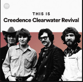
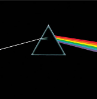
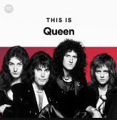
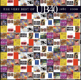

Recently played
Animals
Pink Floyd
Binaural Beats Meditation
Spotify Compilation

This is Creedence Clearwater Revival
Best of CCR

Dark side of the Moon
Pink Floyd

This is Queen
Best of Queen

UB40 Best of
UB40
Creato per Templarec
Più ascolti, più accurati saranno i suggerimenti.
Animals
Pink Floyd
Binaural Beats Meditation
Spotify Compilation
Artisti più popolari
Più ascolti, più accurati saranno i suggerimenti.
Animals
Pink Floyd
Binaural Beats Meditation
Spotify Compilation